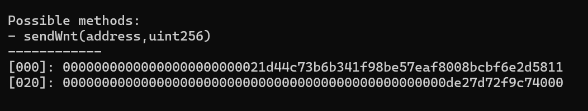

calldata编码原理
calldata 编码规则
在上两篇文章中，我们分析了 Solidity EVM 中的存储结构，在本篇文章中，我们将详细分析 EVM 的 calldata 是如何进行编码的。
solidity 官方文档中的描述：
定义：
len(a)是一个二进制字符串a的字节长度。len(a)的类型被呈现为uint256我们把实际的编码
enc定义为一个由 ABI 类型到二进制字符串的值的映射，因此，当且仅当X的类型是动态的，len(enc(X))才会依赖于X的值定义：对于任意的ABI值
X，根据X的实际类型递归的定义enc(X)
(T1,...,Tk)对于k >= 0且任意类型T1， …，Tk
enc(X) = head(X(1)) ... head(X(k)) tail(X(1)) ... tail(X(k))这里，
X = (X(1), ..., X(k))并且head和tail被定义为如下Ti：如果
Ti是静态类型：
head(X(i)) = enc(X(i))和tail(X(i)) = ""（空字符串）否则，即
Ti是动态类型时，它们被定义为：
head(X(i)) = enc(len( head(X(1)) ... head(X(k)) tail(X(1)) ... tail(X(i-1)) ))tail(X(i)) = enc(X(i))注意，在动态类型的情况下，由于 head 部分的长度仅取决于类型而非值，所以
head(X(i))是定义明确的。 它的值是从enc(X)的开始算起的，tail(X(i))的起始位在head(X(i))中的偏移量。
T[k]对于任意T和k：
enc(X) = enc((X[0], ..., X[k-1]))即，它就像是个由相同类型的
k个元素组成的元组那样被编码的。
T[]当X有k个元素 （k的类型为uint256）：
enc(X) = enc(k) enc((X[0], ..., X[k-1]))也就是说，它被编码为具有相同类型的
k元素的元组（即静态大小为k的数组），前缀为元素的数量。
- 具有
k字节长度的bytes， （假设其类型为uint256）：
enc(X) = enc(k) pad_right(X)，即，字节数被编码为uint256，紧跟着实际的X的字节码序列， 再在前边（左边）补上可以使len(enc(X))成为 32 的倍数的最少数量的 0 值字节数据。
string：
enc(X) = enc(enc_utf8(X))， 即X被 UTF-8 编码，且在后续编码中将这个值解释为bytes类型。 注意，在随后的编码中使用的长度是其 UTF-8 编码的字符串的字节数，而不是其字符数。
uint<M>：enc(X)是在X的大端序编码的高位（左侧）补充若干 0 值字节以使其长度成为 32 字节。
address： 与uint160的情况相同。
int<M>：enc(X)是在X的大端序的 2 的补码编码的高位（左侧）添加若干字节数据以使其长度成为 32 字节； 对于负数，添加值为0xff的字节数据，对于正数，添加 0 值字节数据。
bool： 与uint8的情况相同，1用来表示true，0表示false。
fixed<M>x<N>：enc(X)就是enc(X * 10**N)，其中X * 10**N可以理解为int256。
fixed： 与fixed128x18的情况相同。
ufixed<M>x<N>：enc(X)就是enc(X * 10**N)，其中X * 10**N可以理解为uint256。
ufixed： 与ufixed128x18的情况相同。
bytes<M>：enc(X)就是X的字节序列加上为使长度成为 32 字节而添加的若干 0 值字节。注意，对于任意的
X，len(enc(X))都是 32 的倍数。
展开理解（说人话）
基本概念
- len(a)：表示二进制字符串
a的字节长度，其类型为uint256。 - enc：表示 ABI 类型到二进制字符串的值的映射，即编码函数。
递归定义enc(X)
exc(X)是根据X的实际类型来递归定义的：
对于元组（
T1, ..., Tk）（结构体）enc(X) = head(X(1)) ... head(X(k)) tail(X(1)) ... tail(X(k))对于元组（结构体）中的每个元素
Xi当对应的$X_i$是静态类型，
head(X(i))就等于enc(X(i))（实际对应的参数的内容），tail(X(i))为空（不存在）。即，静态类型会在他的head位置直接存储其实际的值当对应的$X_i$是动态类型，
head(X(i))是enc数据的偏移量（距离enc开始存储的位置的偏移量），tail(X(i))=enc(X(i))（即tail存储动态数据中的实际数据）即，动态类型会在它的head存储它的长度，在他的tail存储它实际的参数内容
固定大小数组
T[K]enc(X) = enc((X[0], ..., X[k-1]))- 他被编码为
k个相同类型元素的元组（又回到了第一条，根据元素的类型再进行不同的区分）
动态大小数组
T[]`enc(X) = enc(k) enc((X[0], ..., X[k-1]))- 编码为元素数量
k和k个相同类型元素的数组（首位存储动态数组的长度，后续存储动态数组每一个元素的值，回到第一条根据元素的类型再进行区分）
字节数组
bytesenc(X) = enc(len(X)) pad_right(X)- 编码为长度和实际字节数据，数据右填充为32字节倍数。（首位存储字节数组的长度（独自占用一个字（32 bytes），后续存储
bytes字节数组的实际内容。当最后的内容没占满一个字（32 bytes）时补码 0 占满整个字）
字符串
string：enc(X) = enc(enc_utf8(X))- 编码为 UTF-8 字符串的字节表示，右填充为32字节倍数。
基本类型编码
uint<M>：enc(X)是X的大端序编码，高位（左侧）补零到 32 字节。
address：- 类似
uint160，补零（左补零）到 32 字节
- 类似
int<M>：enc(X)是X的大端序2的补码编码，高位（左）补0xff或0x00到 32 字节
bool：- 类似
uint8，1代表true，0表示false
- 类似
fixed<M>x<N>和ufixed<M>x<N>：enc(X)是X * 10**N表示为int256或uint256
bytes<M>：enc(X)是X的字节序列，右填充为 32 字节倍数
动态类型的 head 和 tail
- 对于动态类型，
head部分存储了enc(X)数据的偏移量，tail部分存储实际数据。 - 对于动态数组
X，head(X(i))是从enc(X)开始到tail(X(i))的字节数
举例：
假设函数createOrder，参数的 Signature 如下：
function createOrder((address, address[], string)) public调用时传递参数：
(address1, [address2, address3], ”hello")编码过程：
计算
head部分head(address1)=enc(address1)head(address[])= 偏移量head(string)= 偏移量
计算
tail部分：tail(address[])=enc(address2) enc(address3)tail(string)=enc("hello")
整个calldata依次连接head和tail部分
复杂 calldata 解码举例
第一步 decode
接下来对这个复杂的 calldata 解码：
0xac9650d800000000000000000000000000000000000000000000000000000000000000200000000000000000000000000000000000000000000000000000000000000002000000000000000000000000000000000000000000000000000000000000004000000000000000000000000000000000000000000000000000000000000000c000000000000000000000000000000000000000000000000000000000000000447d39aaf100000000000000000000000021d44c73b6b341f98be57eaf8008bcbf6e2d58110000000000000000000000000000000000000000000000000de27d72f9c740000000000000000000000000000000000000000000000000000000000000000000000000000000000000000000000000000000000000000000000002a44a393a41000000000000000000000000000000000000000000000000000000000000002000000000000000000000000000000000000000000000000000000000000001a000000000000000000000000000000000000000b1a02fac5914898f0c800000000000000000000000000000000000000000000000000000000000000000000000000000000000000000000000000000000000000000000000000000000000000000000000000000000000000000000000000000000000000000000cdc1e5f9d480000000000000000000000000000000000000000000000000001c6bf526340000000000000000000000000000000000000000000000000000000000000000000000000000000000000000000000000000000000000000000000000000000000000000000000000000000000000000000000000000000000000000000000000020000000000000000000000000000000000000000000000000000000000000000000000000000000000000000000000000000000000000000000000000000000100000000000000000000000000000000000000000000000000000000000000010000000000000000000000000000000000000000000000000000000000000000000000000000000000000000cb085d52bff5a0e380b3be7906ae76369d8babe300000000000000000000000000000000000000000000000000000000000000000000000000000000000000000000000000000000000000000000000000000000000000000000000000000000b7c34340b8805ec5a767050658cfa389c49304ca0000000000000000000000001d308089a2d1ced3f1ce36b1fcaf815b07217be300000000000000000000000000000000000000000000000000000000000000c0000000000000000000000000000000000000000000000000000000000000000000000000000000000000000000000000000000000000000000000000
首先 Foundry pretty-calldata decode：
Possible methods:
- multicall(bytes[])
------------
[000]: 0000000000000000000000000000000000000000000000000000000000000020 # 第一个动态结构的 head 指向它的 tail 偏移 0x20
[020]: 0000000000000000000000000000000000000000000000000000000000000002 # 进入动态结构，因为这个动态结构是 bytes[] 动态数组，所以第一个存储的是 长度
[040]: 0000000000000000000000000000000000000000000000000000000000000040
# 子结构中第一个元素的 head ，存储第一个元素 tail 的偏移（距离 `enc(X[]i)` （0x40） 的偏移）得到第一个元素 tail 的位置 0x40 + 0x40 = 0x80
# 是 0x40 而不是 0x20 的原因：动态数组的 enc(X) 为 ``enc(X) = enc(k) enc((X[0], ..., X[k-1]))`
# 0x20 对应的是 enc(k) ,0x40 对应的是 enc((X[0], ..., X[k-1])) 也就是实际上 0x40 对应的 enc
[060]: 00000000000000000000000000000000000000000000000000000000000000c0 # 子结构中第一个元素的 head ，计算得到 tail 的偏移为 0x40 + 0xc0 = 0x100
[080]: 0000000000000000000000000000000000000000000000000000000000000044
# 子结构中第一个元素的 tail。这个元素是一个 bytes 类型，第一个位置存储的是 bytes 字节数组的长度 0x44, 最后一个元素的位置为 0xa0 + 0x60(0x44 补满 bytes32) = 0x100
[0a0]: 7d39aaf100000000000000000000000021d44c73b6b341f98be57eaf8008bcbf # 子结构中第一个元素的实际内容
[0c0]: 6e2d58110000000000000000000000000000000000000000000000000de27d72 # 子结构中第一个元素的实际内容
[0e0]: f9c7400000000000000000000000000000000000000000000000000000000000 # 子结构中第一个元素的实际内容 + 补码到占用一整个 bytes32 长度
[100]: 00000000000000000000000000000000000000000000000000000000000002a4
# 子结构中第二个元素的 tail。这个元素是一个 bytes 类型，第一个位置存储的是 bytes 字节数组的长度 0x2a4, 最后一个元素的位置为 0x120 + 0x2c0(0x2a4 补满 bytes32) = 0x3e0
[120]: 4a393a4100000000000000000000000000000000000000000000000000000000 # 子结构中第二个元素的实际内容
...
[3c0]: 0000000000000000000000000000000000000000000000000000000000000000 # 子结构中第二个元素的实际内容 + 补码到占用一整个 bytes32 长度分解后发现，子结构中的两个元素又是两个 calldata。对这两个 calldata 再 decode
decode 出的第一个 calldata decode
这个 calldata 是一个静态 calldata，直接就能 decode：

decode 出的第二个 calldata decode
decode 发现这个 calldata 是一个动态 calldata，对其进行分析：
Possible methods:
- createOrder(((address,address,address,address,address,address[]),(uint256,uint256,uint256,uint256,uint256,uint256,uint256),uint8,uint8,bool,bool,bytes32))
------------
[000]: 0000000000000000000000000000000000000000000000000000000000000020 # 第一个动态结构的 head 指向它的 tail 偏移 0x20
[020]: 00000000000000000000000000000000000000000000000000000000000001a0
# 第一个动态结构的子结构(以下简称子结构)的 head（因为这个 struct 是动态的），指向第一个元素的 tail 的偏移（距离0x20） 0x20 + 0x1a0 = 0x1c0
[040]: 00000000000000000000000000000000000000b1a02fac5914898f0c80000000 # 子结构第二个元素（一个静态的结构体，所以 head 直接存储了内容）的第一个元素 uint256 1
[060]: 0000000000000000000000000000000000000000000000000000000000000000 # 子结构第二个元素的第二个元素 uint256 2
[080]: 0000000000000000000000000000000000000000000000000000000000000000 # 子结构第二个元素的第三个元素 uint256 3
[0a0]: 00000000000000000000000000000000000000000000000000000cdc1e5f9d48 # 子结构第二个元素的第四个元素 uint256 4
[0c0]: 0000000000000000000000000000000000000000000000000001c6bf52634000 # 子结构第二个元素的第五个元素 uint256 5
[0e0]: 0000000000000000000000000000000000000000000000000000000000000000 # 子结构第二个元素的第六个元素 uint256 6
[100]: 0000000000000000000000000000000000000000000000000000000000000000 # 子结构第二个元素的第七个元素 uint256 7
[120]: 0000000000000000000000000000000000000000000000000000000000000002 # 子结构的第三个元素 uint8
[140]: 0000000000000000000000000000000000000000000000000000000000000000 # 子结构的第四个元素 uint8
[160]: 0000000000000000000000000000000000000000000000000000000000000001 # 子结构的第五个元素 bool
[180]: 0000000000000000000000000000000000000000000000000000000000000001 # 子结构的第六个元素 bool
[1a0]: 0000000000000000000000000000000000000000000000000000000000000000 # 子结构的第七个元素 bytes32
[1c0]: 000000000000000000000000cb085d52bff5a0e380b3be7906ae76369d8babe3 # 子元素第一个元素的 tail， address 1
[1e0]: 0000000000000000000000000000000000000000000000000000000000000000 # 子元素第一个元素的 tail， address 2
[200]: 0000000000000000000000000000000000000000000000000000000000000000 # 子元素第一个元素的 tail， address 3
[220]: 000000000000000000000000b7c34340b8805ec5a767050658cfa389c49304ca # 子元素第一个元素的 tail， address 4
[240]: 0000000000000000000000001d308089a2d1ced3f1ce36b1fcaf815b07217be3 # 子元素第一个元素的 tail， address 5
[260]: 00000000000000000000000000000000000000000000000000000000000000c0
# 子元素第一个元素的 tail， address[] 这是 address[] 元素的 head，存储了 address[] tail 的偏移（距离 0x1c0) 0x1c0 + 0xc0 = 0x280
[280]: 0000000000000000000000000000000000000000000000000000000000000000 # 子元素第一个元素中的 address[] 的 tail所以对应调用该函数时实际上的结构是这样的：
createOrder(((0xcb085d52bff5a0e380b3be7906ae76369d8babe3,0x0000000000000000000000000000000000000000,0x0000000000000000000000000000000000000000,0xb7c34340b8805ec5a767050658cfa389c49304ca,0x1d308089a2d1ced3f1ce36b1fcaf815b07217be3,[]),(14072960000000000000000000000000,0,0,500000000000000,500000000000000,0,
0),2,0,true,true,0x0000000000000000000000000000000000000000000000000000000000000000))Foundry 验证一下：